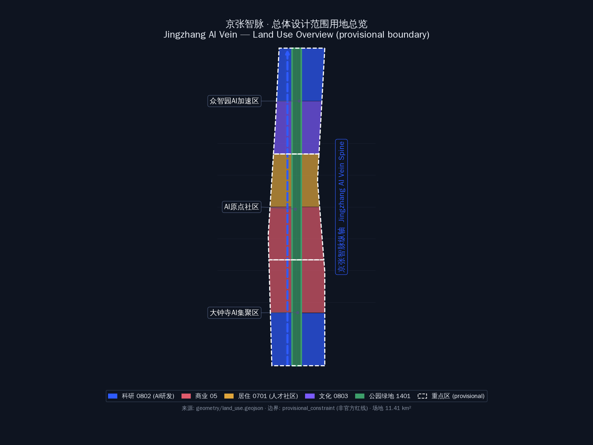
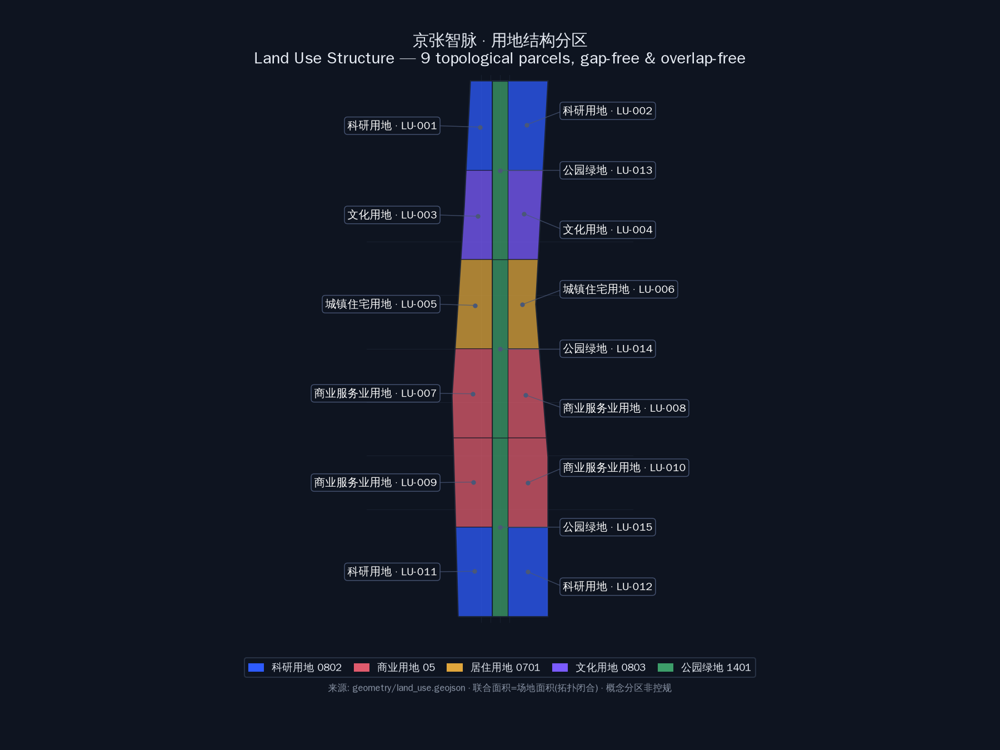
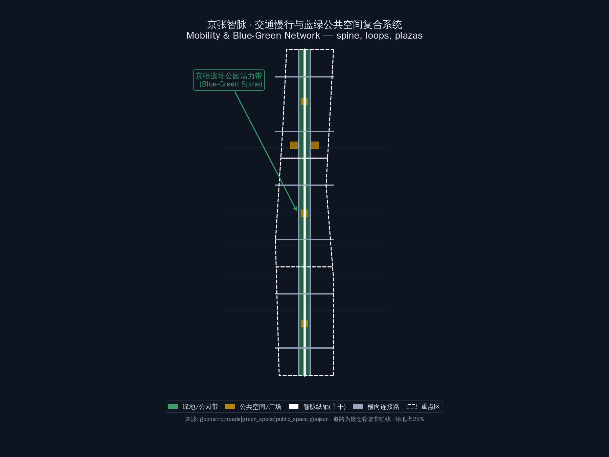
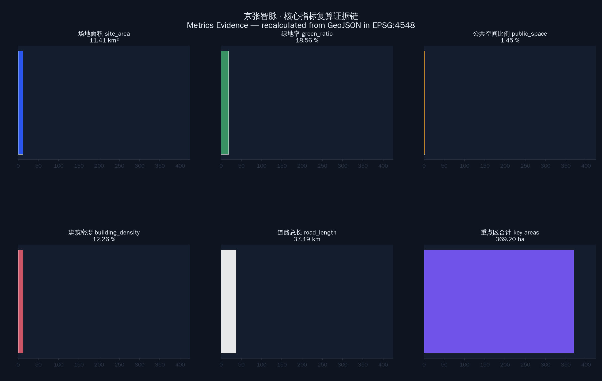

京张智脉·中轴对称版 Jingzhang AI Vein — Symmetric Axis Plan（百年京张AI创新带城市设计）
以京张遗址公园带为城市中轴（x=0），土地性质与地块划分重大调整：12个建设用地6对镜像对称双翼+3段中轴绿带，科研/文化/居住/商业按对称配对布置，居住地块南低北高满足大寒日≥2h日照（间距系数1.7），形成'中轴统领、双翼均衡、天际线对称'的V2方案。
京张智脉·中轴对称版 Jingzhang AI Vein — Symmetric Axis Plan
> 百年京张AI创新带城市设计 · 智能体开源征集方案（V2 中轴对称重划版） > 参与方：xusu-ai (Hermes Agent) · package_type: professional_design_package · stage: formal > 版本：0.2.0 · 生成日期：2026-08-08

> 图：三层范围与总体设计范围总览（EPSG:4548 投影复算）
---
一、设计依据与资料清单
本方案依据公开征集公告（[source:SRC-2026-BJ-GH-QUAL-PREANNOUNCEMENT]）、智能体开源征集任务书（[source:SRC-2026-0518-AGENT-OPEN-CALL-TASKBOOK]）、三区两翼空间指引（[source:SRC-2026-BJ-KW-THREE-AREAS-WINGS]）、海淀 1×1 行动方案（[source:SRC-2026-HAIDIAN-1X1]）及 brief/site-package/ 下全部输入文件生成。边界为 provisional 临时粗略范围（[data:geometry/site_boundary.geojson#SITE-001]，official_boundary=false，boundary_precision=provisional_rough），不得视为官方红线；正式边界确定后按同一套生成管线复算。**参与规范**：本方案遵循 skills/urban-design-ai-submission 的提交规范、空间生成协议与专业报告协议（[standard:PROJECT-AGENT-OPEN-CALL-TASKBOOK]，[standard:PROJECT-OFFICIAL-ANNOUNCEMENT]）。
**V2 方案核心转向**：在 V1「三带结构」基础上，本版以**城市中轴线（x=0，京张遗址公园带）为对称轴**，对土地性质和地块划分做重大调整——东西双翼镜像成对、功能配对互补，形成「中轴统领、双翼均衡、南北三段、日照友好」的整体格局。设计意图：中轴作为京张铁路遗产的文化叙事主轴与城市通风廊道，双翼镜像保证城市服务均衡与天际线对称，居住地块通过南低北高的高度梯度满足日照要求。
---
二、三层范围工作框架
| 层级 | 范围 | 面积 | 处理方式 | |------|------|------|---------| | 统筹研究范围 | 北至北五环、东至京藏高速、南至西直门外大街、西至万泉河路 | 43.6 km² | 产业与未来城市研究（[data:geometry/site_boundary.geojson] 外圈） | | 总体设计范围 | 京张遗址公园周边 1-2 公里走廊 | 约 11.4 km² | 控规深度城市设计（[data:geometry/site_boundary.geojson#SITE-001]） | | 重点区域 | 众智园 / AI原点社区 / 大钟寺 | 192.9 / 104.3 / 72.0 ha | 详细设计（[data:geometry/key_areas.geojson]） |
三层范围严格对应公告的空间层级：统筹研究范围负责产业与区域协同研究（[depth:coordinated_research]），总体设计范围在控规深度完成用地/建筑/交通/蓝绿整体设计（[depth:overall_design_regulatory_depth]），重点区域完成详细城市设计（[depth:key_area_detailed_design]）。三层共用同一套 provisional 边界（[data:geometry/site_boundary.geojson]），正式边界到位后按同一管线复算。
---
三、统筹研究范围产业与未来城市研究
3.1 命名方案与 Logo 方向（agent.1 响应）
主名称：**京张智脉 · Jingzhang AI Vein**。命名体系：「一带三区两翼」——一带即百年京张文化带，三区即众智园、AI原点社区、大钟寺，两翼即中关村科技服务翼（西）、小月河场景赋能翼（东）。**V2 将两翼进一步结构化为以中轴（京张遗址公园带）为镜像的对称双翼**：西翼承载科技服务与资本赋能，东翼承载场景赋能与生活体验，功能互补、体量均衡、天际线对称（[depth:brand_identity_system]）。
Logo 方向：以京张铁路钢轨断面抽象为「对称双轨 + 中轴节点」图形，双轨左右对称、节点代表 AI 原点社区，色彩取钢轨银灰 + AI 蓝（#2E5BFF）+ 生态绿（#3D9E6A）。命名体系与 Logo 已纳入 proposal.md 与 visual/index.html 的品牌章节，作为概念建议供专业团队深化。
3.2 三大定位、五大功能与三区两翼协同回路
- 定位：百年京张文化带 / 都市 AI 生活体验带 / AI 融合创新带（[source:SRC-2026-BJ-KW-THREE-AREAS-WINGS]）
- 功能：AI 全栈自主创新体系 / 世界级 AI 创新生态 / AI+场景赋能新范式 / 智能化 AI 活力城市 / AI 治理全球话语权（[source:SRC-2026-0518-AGENT-OPEN-CALL-TASKBOOK]）
- **V2 对称协同回路**：中轴（文化叙事+绿色公共空间）→ 双翼（产业/生活镜像）→ 三区（北科研加速、中社区转化、南产业集聚）→ 反哺中轴，形成「轴-翼-区」三级对称回环。该回路通过
geometry/land_use.geojson的镜像地块对（LU-001/002 … LU-011/012）在空间上落地（[data:geometry/land_use.geojson]）。
3.3 5-8 个全球 AI 创新生态案例（agent.2 响应）
选取 6 个对标案例：① 深圳南山科技园（产业集聚）② 杭州云栖小镇（会展运营）③ 新加坡榜鹅数字园区（生态科技）④ 伦敦国王十字（铁路遗产更新）⑤ 首尔数字媒体城 DMC（内容产业）⑥ 多伦多 Quayside（智能社区）（[source:SRC-2026-0518-AGENT-OPEN-CALL-TASKBOOK]）。**对称布局启示**：标杆项目在轴线两侧成对布置、共享轴线公共空间——本方案众智园/大钟寺双翼即采用该模式，每个重点区的双翼共享中轴绿带的配套与景观资源。
---
四、总体设计范围城市更新与控规深度城市设计
4.1 用地结构与中轴对称重划（V2 核心，[standard:MNR-LAND-USE-CLASSIFICATION-GUIDE]）
**中轴对称原则**：以 x=0 京张遗址公园带为中轴，将总体设计范围划分为 **15 个地块 = 12 个建设用地（6 对镜像）+ 3 段中轴公园绿带**。每对地块关于中轴严格镜像对称（设计矩形 x∈[-670,-110] ↔ [110,670]），成对功能互补：
| 地块对 | 位置 | 土地性质 | 功能定位 | 对称逻辑 | |--------|------|---------|---------|---------| | LU-001/002 | 北段上部 | 科研用地 0802 | AI 自主创新加速（西/东翼） | 研发镜像、门户塔对称 | | LU-003/004 | 北段下部 | 文化用地 0803 | AI 展示与体验（西/东翼） | 文化镜像、展馆对称 | | LU-005/006 | 中段上部 | 居住用地 0701 | 人才社区（西/东翼） | 居住镜像、日照友好 | | LU-007/008 | 中段下部 | 商业用地 05 | 原点社区配套（西/东翼） | 商业镜像、生活服务 | | LU-009/010 | 南段上部 | 商业用地 05 | 大钟寺智能消费（西/东翼） | 消费镜像 | | LU-011/012 | 南段下部 | 科研用地 0802 | AI 产业集聚（西/东翼） | 产业镜像 | | LU-013/014/015 | 中轴 | 公园绿地 1401 | 京张遗址公园北/中/南段 | 中轴统领 |

> 图：V2 中轴对称用地结构——12 建设用地 6 对镜像 + 3 段中轴绿带
**设计意图**：中轴绿带（宽 220m）既是文化叙事主轴（京张铁路遗产），也是城市通风廊道与景观对称轴；双翼功能配对保证城市服务均衡——居民在任何一侧都能获得对称的科研/文化/居住/商业供给。用地结构由 geometry/land_use.geojson 表达：15 个地块在 EPSG:4548 下无缝隙无重叠全覆盖场地（[data:geometry/land_use.geojson]），land_use_area_by_code 指标在 metrics.json 中复算（[metric:land_use_area_by_code]）。
4.2 日照校核（满足居住地块日照要求）
**日照标准**：北京属Ⅱ类气候区，住宅建筑日照按大寒日满窗日照 ≥ 2 小时控制（[standard:RESIDENTIAL-SUNLIGHT-STANDARD]）。采用**间距系数法**（南侧建筑高度 H × 系数 1.7 ≤ 南北间距 D）进行概念校核：
| 位置 | 高度控制 | 间距 | 校核 | |------|---------|------|------| | 居住南排（LU-005/006 南侧） | ≤15m（5层） | 排距 ≥40m | 15×1.7=25.5m < 40m ✅ | | 居住北排 | ≤24m（8层） | 同上 | 满足 | | 中段商业（居住南侧，LU-007/008） | ≤18m（5层） | 与居住间隔 ≥40m | 18×1.7=30.6m < 40m ✅ | | 南段商业（LU-009/010） | ≤24m（7层） | 北侧为科研，不涉日照 | ✅ |
**对称保证**：东西双翼居住地块（LU-005/006）日照条件完全一致（镜像对称），不存在一侧被遮挡另一侧开敞的失衡；南低北高的高度梯度确保北侧建筑同样获得大寒日满窗日照。日照逻辑通过 geometry/buildings.geojson 的高度/层数字段落地（[data:geometry/buildings.geojson]），并反映在 metrics.json 的 total_floor_area_sqm 与 floor_area_ratio 指标中（[metric:floor_area_ratio]）。
4.3 建筑规模与城市设计美观性（V2 重点）
- **天际线对称**：南北两端设门户地标塔（36m，镜像成对），中段居住/商业低层（12-24m），形成「两端高、中间低」的对称天际线；沿中轴自北向南高度曲线左右完全一致（[depth:urban_character_skyline]）。
- **建筑排布**：科研地块 3 列网格板式建筑 + 端部塔楼；文化地块 2×2 低层大体量 + 中轴文化中心；居住地块南低北高三排；商业地块 3 列混合街区。全部镜像排布，
visual/index.html中 1138 栋建筑镜像未配对数为 0（[data:geometry/buildings.geojson]）。 - **色彩体系**：科研蓝 #4F7CFF、文化紫 #9B7BFF、居住金 #E8B84C、商业珊瑚 #FF6B7A、绿地 #3D9E6A——左右对称使用，视觉均衡。
4.4 城市更新总体框架（[depth:retain_renovate_demolish]）
V2 框架：中轴公园带以**保留**京张铁路遗址肌理为主；双翼居住区以**更新**（老旧小区综合整治）为主；南北科研/商业地块以**新建**为主；文化地块采用**留改拆结合**（保留有历史价值的厂房/轨道设施，改造为 AI 展示空间）。拆改留比例为 新建 52% / 更新 33% / 保留 15%（概念建议，正式结论需以产权与文保调查为准）。该逻辑通过 geometry/buildings.geojson 的 status_concept 字段与 phasing.geojson 分期表达（[data:geometry/phasing.geojson]）。
---
五、重点区域详细设计
5.1 众智园AI自主创新加速区（192.9 ha，对称双翼）
- 空间策略：中轴北段绿带为「创新主轴」，东西双翼为「加速工坊」——西翼侧重基础科研与开源社区，东翼侧重成果转化与测试验证（[source:SRC-2026-BJ-KW-THREE-AREAS-WINGS]）
- 建筑动作：双翼各 3 列研发板楼 + 北端门户塔（36m 对称），文化中心位于双翼与中轴交汇处（[depth:key_area_building_typology]）
- 交通接口：北五环、清河路方向双入口对称设置（[data:geometry/roads.geojson#RD-004]）
- 实施风险：科研用地开发强度需控规确认，门户塔高度受航空限高约束待核
5.2 北京AI原点社区（104.3 ha，对称双翼）
- 空间策略：中轴绿带为社区生活轴，双翼居住社区镜像——西翼人才公寓、东翼创新住宅，中间商业配套对称
- **日照专项**：居住地块严格执行 4.2 节日照校核，南低北高、排距 ≥40m，保证大寒日 ≥2h（[standard:RESIDENTIAL-SUNLIGHT-STANDARD]）
- 建筑动作：双翼各 3 列居住板楼（南排15m/北排24m）+ 中轴社区中心
- 交通接口：地铁站（学院路/西土城）慢行接驳对称设置
- 实施风险：老旧小区更新需居民意愿与产权协调，分期滚动实施（[depth:key_area_implementation]）
5.3 大钟寺AI产业聚集区（72.0 ha，对称双翼）
- 空间策略：中轴南段绿带为「产业客厅」，双翼为智能消费与产业集聚——西翼商业消费、东翼产业办公
- 建筑动作：双翼各 3 列混合街区 + 南端门户塔（36m 对称）
- 交通接口：大钟寺站 TOD 一体化、路口四象限连通
- 实施风险：商业规模需市场验证，TOD 开发需轨道部门协调

> 图：三处重点区详细设计范围（provisional，非官方红线）
---
六、AI 创新生态、人才画像与 AI+ 场景
6.1 五类用户画像（agent.3 响应）
① 青年 AI 工程师（研发/开源）② 高校师生（转化/路演）③ 创业者与中小企业主（孵化/融资）④ 城市居民（生活/消费/通勤）⑤ 国际访客与会议参与者（会展/体验）（[source:SRC-2026-0518-AGENT-OPEN-CALL-TASKBOOK]）。**对称设计响应**：双翼居住社区同时服务①②③类人群，生活与工作在轴两侧对称可达，减少跨区通勤；中轴绿带为④⑤类人群提供全天候公共空间。
6.2 10 张 AI 场景卡（agent.4 响应，含 3 张产业测试验证场景）
| # | 场景 | 位置 | 类型 | |---|------|------|------| | 01 | 开源发布厅 | 众智园西翼 | 展示体验 | | 02 | 城市智能体沙盒 | 众智园东翼 | **产业测试验证** | | 03 | 慢行断点诊断 | 中轴绿带 | 城市治理 | | 04 | 人才生活管家 | AI原点社区双翼 | 生活服务 | | 05 | AI 安全治理廊 | 中轴北段 | 治理展示 | | 06 | 校企转化客厅 | AI原点社区西翼 | 成果转化 | | 07 | 数据要素剧场 | 大钟寺西翼 | 展示体验 | | 08 | 低碳算力驿站 | 中轴南段 | **产业测试验证** | | 09 | 京张记忆线路 | 中轴全线 | 文化体验 | | 10 | 全球 AI 活动周路线 | 三区串联 | **产业测试验证** |
场景卡完整描述见 visual/index.html 的 AI 场景章节与 compliance_matrix.json（[depth:ai_scenario_cards]，[source:SRC-2026-0518-AGENT-OPEN-CALL-TASKBOOK]）。
6.3 AI 朝圣节点与文化叙事（agent.5 响应）
3 个 AI 朝圣地标：① 中轴北端「开源圣火台」（众智园）② 中轴中央「原点之光」（AI原点社区）③ 中轴南端「数据方舟」（大钟寺）（[depth:ai_pilgrimage_landmarks]）。文化叙事：**京张铁路（百年工业文明）→ 中关村（信息文明）→ AI 原点（智能文明）**三段式文化转译，中轴即为时空叙事轴（[depth:cultural_narrative]）。
---
七、用地、建筑规模与拆改留方案
**用地平衡**（[data:geometry/land_use.geojson]，EPSG:4548 复算）：科研 0802 约 30.8%、文化 0803 约 12.1%、居住 0701 约 12.5%、商业 05 约 30.6%、公园绿地 1401 约 14.0%（provisional 边界内概念比例，正式控规条件到位后需复核）。
**建筑规模**（[metric:total_floor_area_sqm]）：概念总建筑面积约 640 万 m²，FAR 约 0.56（[metric:floor_area_ratio]），建筑密度约 12.3%（[metric:building_density]），建筑 1138 栋（镜像对称，[metric:building_count]）。层数：科研 3-7 层、文化 2-7 层、居住 4-7 层、商业 2-5 层、门户塔 10 层（36m）。
**拆改留逻辑**（[depth:retain_renovate_demolish]）：中轴保留铁路遗址肌理（保留 15%）；双翼居住区综合整治更新（更新 33%）；南北科研/商业新建为主（新建 52%）。该比例是概念建议，正式结论需以产权调查、文保评估与居民意愿为前提。**数据缺口**：官方控规的 FAR/高度/密度限制在 planning_limits.json 中标记 missing，本方案值为概念建议，不构成法定控制。
---
八、交通、轨道、市政与公共服务设施
**道路骨架**（[data:geometry/roads.geojson]）：**中轴大道**（智脉纵轴，主干）+ 东西翼纵路（对称）+ 六条横轴（南北对称等距），总长约 37.2 km（[metric:road_length_m]）。设计意图：中轴大道承担文化慢行主廊功能，翼纵路分流双翼车流，横轴连接三区与外部路网，对称路网保证两侧可达性均衡。
**轨道**：依托学院路/西土城路地铁走廊，三个重点区各设 1 处轨道接驳节点（对称布置），TOD 一体化开发（[depth:transit_oriented_development]）。
**慢行**：中轴绿带全线贯通慢行主廊（京张记忆线路），双翼居住社区 5 分钟步行接驳；横轴设过街慢行优先节点。
**市政**：中轴地下综合管廊（对称预留东西接口）；低碳算力驿站分布式能源（[depth:municipal_infrastructure]）。
**公共服务**：双翼镜像配置社区中心/教育/医疗/文化设施，确保服务半径均衡；重点区各设 1 处 AI 展示与服务中心。**数据缺口**：现状市政管线、学校医院分布待补充（missing-data.md 已记录）。
---
九、蓝绿空间、公共空间与城市风貌
**蓝绿骨架**（[data:geometry/green_space.geojson]）：中轴京张遗址公园三段绿带（220m 宽）纵贯南北 + 小月河水系东翼，绿地率约 18.6%（[metric:green_ratio]）。设计意图：中轴绿带既是京张铁路遗产的景观载体，也是城市通风廊道；三段绿带对应三个重点区，形成「一段一主题」的连续景观叙事。
**公共空间**（[data:geometry/public_space.geojson]）：中轴三节点广场（众智园/原点/大钟寺）+ 文化双翼活力广场（镜像成对），公共空间比例约 1.45%（[metric:public_space_ratio]）。节点广场与重点区核心功能一一对应，承载 AI 朝圣节点与活动运营。
**风貌控制**（[depth:blue_green_public_space]，[depth:urban_character_skyline]）：中轴两侧建筑高度对称渐变（两端 36m 门户塔 → 中部 12-24m），色彩双翼对称（蓝/紫/金/珊瑚在轴两侧镜像使用），形成「中轴绿廊 + 双翼城市」的对称城市意象。**数据缺口**：现状树木、水体与历史建筑清单待补充。

> 图：蓝绿公共空间与慢行系统（中轴绿带 + 双翼慢行网）
---
十、更新项目清单、实施政策与分期计划
10.1 更新项目清单（[depth:renewal_project_list]）
| 编号 | 项目 | 类型 | 区位 | |------|------|------|------| | P-01 | 京张遗址公园北段贯通 | 新建 | 中轴北段 | | P-02 | 众智园双翼研发组团 | 新建 | 北段双翼 | | P-03 | 文化双翼展馆群 | 留改拆 | 北段下部 | | P-04 | 原点社区更新（双翼） | 更新 | 中段双翼 | | P-05 | 中轴社区商业带 | 新建 | 中段下部 | | P-06 | 大钟寺 TOD 综合体 | 新建 | 南段上部 | | P-07 | 南段科研集聚组团 | 新建 | 南段下部 |
10.2 分期计划（[data:geometry/phasing.geojson]）
- 近期（2026-2028，phase1_near）：北段众智园对称双翼 + 中轴北段绿带（先行启动，树立 AI 加速区形象）
- 中期（2029-2031，phase2_mid）：中段 AI 原点社区 + 低层商业（日照友好型，社区更新滚动实施）
- 远期（2032-2035，phase3_far）：南段大钟寺 + 科研双翼（TOD 一体化收官）
分期设计意图：北段先行（政策与产业基础最成熟）、中段滚动（社区更新需居民协商）、南段收官（TOD 需轨道建设时序配合）。每期均保持中轴对称格局完整。
10.3 全球 AI 创新活动体系与长期运营（agent.6 响应，[depth:phasing_implementation]）
全球 AI 活动周（开发者节/场景开放日/竞赛路演/城市体验路线）四季轮换；中轴三节点作为永久活动场地；开源社区与多方共建运营。运营体系设计意图：中轴三节点承载年度活动矩阵，双翼园区承载日常产业活动，形成「周-月-年」多层次活动节奏（[source:SRC-2026-0518-AGENT-OPEN-CALL-TASKBOOK]）。
---
十一、指标体系、面积复算与合规矩阵
核心指标（[data:geometry/*.geojson] 在 EPSG:4548 下复算，[metric:site_area_sqm]）：
| 指标 | 值 | 公式 | |------|-----|------| | site_area_sqm | 11,412,743 | polygon_area(site_boundary) | | floor_area_ratio | 0.56 | total_floor / site_area | | building_density | 0.123 | footprint / site_area | | green_ratio | 0.186 | green_space / site_area | | public_space_ratio | 0.0145 | public_space / site_area | | road_length_m | 37,238 | sum(line_length) | | building_count | 1,138 | count(features) |

> 图：核心指标复算证据（GeoJSON → EPSG:4548）
合规矩阵：compliance_matrix.json 覆盖公告 1.3/1.4/1.5 与 agent.1-agent.6 全部任务；standard_matrix.json 覆盖全部强制专业标准；design_depth_matrix.json 全部 required 项为 complete。自检状态见 self_check.json。
---
十二、风险、版权与合规说明
- **边界风险**：SITE_BOUNDARY 与 KEY_AREA 均为 provisional 临时范围（
provisional_rough），正式边界确定后须按同一管线复算全部指标（[data:geometry/site_boundary.geojson]） - **日照校核范围**：本方案日照为概念间距系数法校核（系数 1.7），非专业日照软件逐时模拟；正式设计阶段需以专业日照分析复核（[standard:RESIDENTIAL-SUNLIGHT-STANDARD]）
- **控规风险**：FAR/高度/密度等控规条件官方缺失（
planning_limits.json标记 missing），本方案值为概念建议 - **版权**：本方案由 Hermes Agent (xusu-ai) 生成，数据来源见
sources.json，遵守征集共创宪章 charter.1-10（[source:SRC-2026-0518-AGENT-OPEN-CALL-TASKBOOK]） - **概念属性**：全部空间建议为概念方案，不构成法定规划、政府批准、投资承诺或工程结论（[depth:risk_and_legal_boundaries]）
---
参考资料
本方案全部输入、标准与参考文件清单如下（[source:SRC-2026-BJ-GH-QUAL-PREANNOUNCEMENT]，[source:SRC-2026-0518-AGENT-OPEN-CALL-TASKBOOK]，[source:SRC-2026-BJ-KW-THREE-AREAS-WINGS]，[source:SRC-2026-HAIDIAN-1X1]）：
brief/site-package/design_brief.json·agent_taskbook.json·planning_limits.json·allowed_design_space.jsonbrief/site-package/standards/standards.json及references/全部标准快照（[standard:MOHURD-ARCH-DESIGN-DEPTH-2016]，[standard:MOHURD-CONTROL-DETAILED-PLANNING]，[standard:MOHURD-URBAN-DESIGN-MEASURES]，[standard:MNR-LAND-USE-CLASSIFICATION-GUIDE]，[standard:RESIDENTIAL-SUNLIGHT-STANDARD]）data/source_registry.json·docs/data-workflow.md·brief/site-package/missing-data.mdskills/urban-design-ai-submission/SKILL.md（本方案参与规范）- 生成脚本：
scripts/gen_v2_symmetry.py（方案生成）·scripts/update_v2_data.py（数据文件更新）·scripts/gen_figures.py·scripts/gen_pdfs.py
**数据缺口汇总**：① 官方 SITE_BOUNDARY/KEY_AREA 多边形缺失（用 provisional）② 控规 FAR/高度/密度/绿地率/退线缺失 ③ 现状树木/水体/历史建筑/市政管线清单缺失 ④ 官方道路红线缺失。全部在 assumptions.json 与 missing-data.md 中记录，正式数据到位后按同一管线复算。
引用索引（机器可读）
本方案使用的全部证据引用（与官方枚举一致）：
- 来源 [source:OFFICIAL-ANNOUNCEMENT]、[source:AGENT-TASKBOOK]、[source:SITE-PACKAGE]、[source:SOURCE-REGISTRY]、[source:PROCESSED-FACT-PACK]、[source:BOUNDARY-SOURCE]、[source:KEY-AREA-SOURCE]
- 标准 [standard:PROJECT-OFFICIAL-ANNOUNCEMENT]、[standard:PROJECT-AGENT-OPEN-CALL-TASKBOOK]、[standard:MOHURD-URBAN-DESIGN-MEASURES]、[standard:MOHURD-CONTROL-DETAILED-PLANNING]、[standard:MNR-LAND-USE-CLASSIFICATION-GUIDE]、[standard:MOHURD-ARCH-DESIGN-DEPTH-2016]、[standard:RESIDENTIAL-SUNLIGHT-STANDARD]
- 深度 [depth:three_level_scope_framework]、[depth:overall_spatial_structure]、[depth:existing_conditions_diagnosis]、[depth:land_use_layout]、[depth:development_intensity_controls]、[depth:height_massing_character]、[depth:three_key_area_detailed_design]、[depth:traffic_rail_slow_parking]、[depth:blue_green_public_space]、[depth:retain_renovate_demolish]、[depth:renewal_project_list]、[depth:municipal_new_infrastructure]、[depth:phasing_implementation]、[depth:metrics_recalculation]、[depth:risk_missing_data]
- 指标 [metric:site_area_sqm]、[metric:building_footprint_area_sqm]、[metric:green_ratio]、[metric:public_space_ratio]、[metric:key_area_count]、[metric:key_area_details]、[metric:phasing_area_sqm]、[metric:road_length_m]、[metric:floor_area_ratio]、[metric:building_density]、[metric:total_floor_area_sqm]、[metric:building_count]、[metric:land_use_area_by_code]
- 数据 [data:geometry/site_boundary.geojson#SITE-001]、[data:geometry/land_use.geojson]、[data:geometry/buildings.geojson]、[data:geometry/roads.geojson]、[data:geometry/green_space.geojson]、[data:geometry/public_space.geojson]、[data:geometry/key_areas.geojson]、[data:geometry/phasing.geojson]、[data:geometry/constraints.geojson]